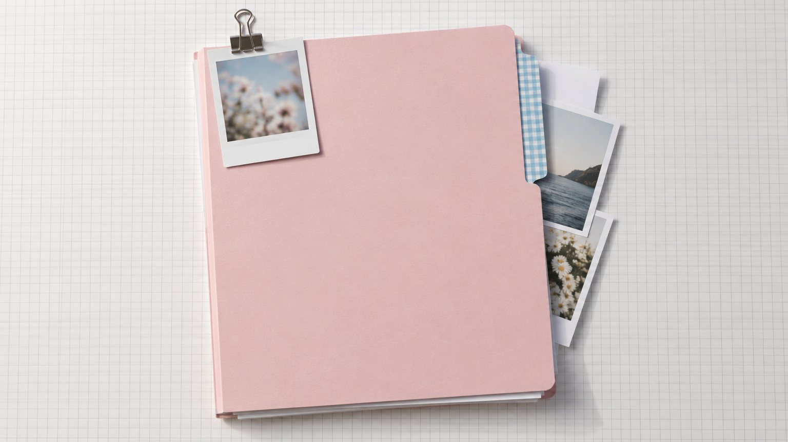
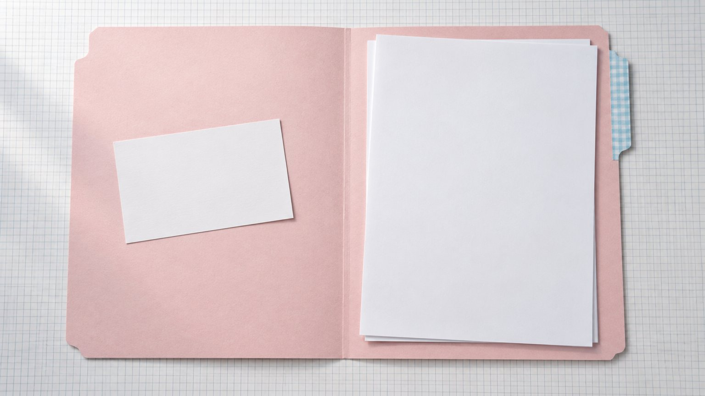
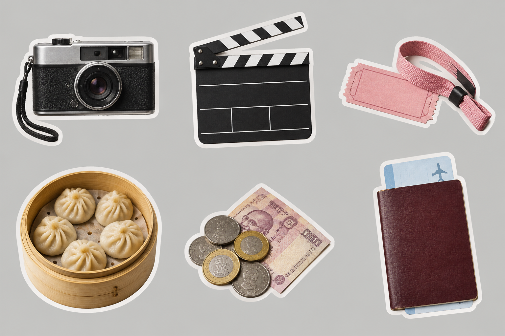

Images I need
Start with the house style, so every image looks like it came from the same shoot. Then use the sketches below: they show the shape of each image and where things sit. Generate each one photo-real, save it in the folder named on its card, and tell me.
Keep blank: I print your words here
Keep blank: your real work goes here
House style: how every image should look
One look across the whole site: soft pastel stationery, photographed for real on a bright morning. If an image could sit next to the cover without looking like it came from a different shoot, it's right.
Match these




Tip: most tools let you upload a reference image. Upload the closed folder photo above as a style reference with every prompt.
The style paragraph: paste this at the end of every prompt
Photorealistic editorial stationery photograph. Soft natural window light from the upper left with gentle falloff, realistic soft contact shadows under every object and a soft longer shadow toward the lower right. Matte paper and card with visible fibres and small real-world imperfections. A calm, bright pastel palette led by light pink and light blue, with mint green, lilac, peach and butter yellow as accents, and clean white paper. Shot on a medium format camera, sharp focus throughout, true-to-life colour with no colour cast and soft contrast. Every paper, screen, tab and label is completely blank. No text, no letters, no numbers, no logos, no watermark.
How to write each prompt: describe the scene from its card below in one or two sentences, then paste the style paragraph. For example: "Three iPhones standing upright in a row on plain lilac card, seen straight on and slightly from above, the middle one a little forward, screens completely blank and evenly lit." followed by the style paragraph.
Colours
- Light pink, the lead
- Light blue, the lead
- Mint
- Lilac
- Peach
- Butter yellow
- White paper
Each project has its own card colour: CRFTD pink, Too Yumm! mint, Tiya reels lilac, AquaTerra peach, media planning light blue, PR desk white, photography butter. Keep everything soft and chalky. If a colour looks neon, glossy or deep, regenerate.
Light
- One window, upper left, soft morning daylight.
- Shadows soft and falling to the lower right, in every image.
- A faint window-light shape at an edge is fine. Hard sun stripes, flash or studio glare are not.
Camera angle
- Things lying on the desk: straight down from above (cover, open file, phones, calendar, planner, index cards, boarding pass).
- Things standing up or on a wall: straight on, slightly from above (folder stack, tee on hanger, standing iPhones, pinboard, gallery wall).
- Normal lens look. No fisheye, no tilted horizon, no blur on the main objects.
Surfaces
- Desk scenes: pale white graph paper with a fine light grey grid.
- Project scenes: plain matte card in that project's colour.
- Wall scenes: a pale warm-white wall.
- Never wood, marble, concrete, fabric or anything dark.
Props, the same small kit every time
- White-framed polaroids, silver binder clips, pastel pink bulldog clips, paper clips, white A4 sheets, index cards, the light blue gingham tab.
- Two props at most per scene, so the main object stays the hero.
- No plants, coffee cups, candles, laptops, hands or people unless the card asks for them.
Blank areas
- Flat to the camera, evenly lit, and clear of objects and shadows, so the text I print sits cleanly.
- Truly blank: no fake squiggle text, no lines, no tiny logos.
Phones and screens
- Modern phones with thin bezels and no visible brand logo.
- Screens a flat, even light grey or white with no glare or reflections.
Cut-out stickers
- Flat plain mid-grey background with no shadow or gradient.
- An even, thick white paper border around each object, like the sticker sheet above.
- Objects spaced apart so none of them touch.
Check before you send it to me
- Light from the upper left, soft shadows toward the lower right
- Pastel and chalky, nothing neon, glossy or dark
- Blank areas are really blank, with no fake writing
- No logos, brand names or watermarks
- At least 2048px on the long side, saved as PNG
- It looks like the same shoot as the cover photo
- Saved with the exact file name from its card
If it fails one of these, generate 2 to 4 more versions and pick the best. Reuse the same seed if your tool offers one.
1. Cover
Closed file, phone
Same pink folder as the laptop one, but filling most of a tall frame. Front completely blank.
Open file, laptop
Open file, phone
The open folder seen from above, cropped so the right-hand page with its blank white sheet fills the frame.
Coins sticker, without the banknote
A small pile of shiny Indian rupee coins only. No notes or portraits.
2. Section dividers
Stacked folders, one per section
The same photo, front folder in a new colour
Same arrangement as the CRFTD one, just the big front folder changes colour. All tabs blank. One polaroid clipped to the front folder.
3. Project scenes
CRFTD: blank tee and swing tag
A plain white tee on a wooden hanger against a pale wall, front facing, plus a blank kraft paper swing tag. I place each of your real tee designs on the chest.
Too Yumm!: phones on the desk
Three modern phones lying flat on mint card, seen from above, screens completely blank and evenly lit.
Too Yumm!: content calendar page
A blank sheet of A4 paper on mint card, with a paper clip at the top. I print the calendar grid onto it.
Tiya reels: three iPhones
Three iPhones standing upright in a row on lilac card, blank screens, the middle one slightly forward.
AquaTerra: event pinboard
A peach fabric pinboard with three blank white poster sheets pinned up, two blank ticket stubs and a festival wristband. Your real Paradox, Starry Night and Disco Diwali posters go on the sheets.
Media planning: open planner
An open spiral planner lying flat on sky blue card, both pages blank white. I draw the real donut charts, city bars and schedule onto the pages.
PR desk: newspaper clipping
A torn-out newspaper page with blank columns, on white card, with a paper clip. I set your real press release on it in newspaper type.
Photography: gallery wall
A pale gallery wall with four empty thin white frames with mounts, and a small blank exhibition placard. Your four NCPA photos go in the frames.
Also on my desk: index cards
Five blank pastel index cards in a loose row on graph paper, each a different pastel. One role per card.
Contact: boarding pass
A blank pastel blue boarding pass with a tear-off stub, lying on graph paper next to a burgundy passport. I print your email, LinkedIn and CV links onto it.
4. These must stay real, not generated
These are your actual work, so they come from your files, not an AI tool:
- CRFTD: your tee designs and any product or lookbook photos
- Too Yumm!: screenshots of the 4 live pieces and the calendar (blur anything confidential)
- Tiya: the 3 real reel covers and the view-count screenshot
- AquaTerra: the real Paradox, Starry Night and Disco Diwali posters and event photos
- PR desk: the press release text
- Photography: your 4 NCPA photos and 6 to 10 more of your own